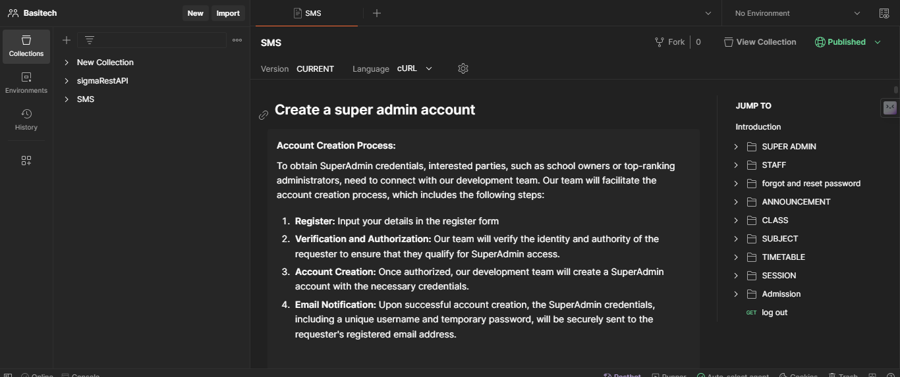

BASITECH WORK EVALUATION
SMS - School Management System, designed for the sole purpose of controlling schools‚Äô data virtually üíª.
Note: Certain information will not be disclosed as the company prioritizes privacy as a paramount concern
I initially joined this start-up as an intern, only to discover that I was assigned the role of a senior backend developer ü•≤, as there was no one else in that position on the team‚Äîjust me and another intern. Stepping into this unexpected role has been quite demanding.
The beginning was challenging; without a lead for the backend team, our plans seemed to go nowhere. We repeatedly drafted and redrafted, planned and replanned.
While my colleague concentrated on setting up and constructing routes, my responsibility revolved around meticulous checks on route functionality, considering various scenarios. Surprisingly, I discovered that the request bodies were not being adequately verified üòØ. This posed a potential risk for SQL injection. I wrote validation middlewares. Concerned, I pondered, 'What if the email doesn't exist? How should we validate it?' Engaging my colleague in this thought process led to a solution: sending verification links to users' email addresses during the registration process. To ensure its effectiveness, I dedicated an entire night to attempting registrations with non-existing email addresses for confirmation.
I assumed this responsibility because I dislike lags in projects I'm involved in. While I may not be the most proficient, I strive to minimize shortcomings, understanding that no system is entirely flawless, but it should have minimal flaws. The process was demanding, involving code refactoring, thorough testing with Postman, and prioritizing security enhancements.
As we progressed, my focus shifted to contemplating the models and their connections. I began pondering the long-term effects. Proposing frequent nighttime collaboration with my colleague, I introduced DrawSQL to draft and interconnect the models, ensuring both security and ease of access for the rightful owner.
I delved into comprehensive documentation using Postman, carefully testing each route and configuring the API for deployments. My journey doesn't stop here; I'm eager to explore logging, raw testing, dockerization, monitoring, raw deployment, and more. I'm open to sharing my experiences along the way.
-
Database diagrams - I drew database diagrams to get a view of the database structure, how the models are connected to each other and the school, providing a clear reference for developers that will join in the future, and facilitate better database management.
-
API workflows - I established workflows to visualize our processes, covering authorization, validation, specific queries, error handling, and more. This proved immensely beneficial, reducing cognitive load when writing actual code since the thinking part was addressed. Having a roadmap for building each route streamlined the process, benefiting both me and my colleague. Code reviews became straightforward as we had predefined processes to follow. Night meetings were crucial, allowing us to anticipate and address all possible scenarios, especially considering the sensitive nature of dealing with school data.
Meticulous observation and thoughtful planning were essential in constructing these workflows. Recognizing that my workflows are not flawless, I'm committed to enhancing my thinking capacity for improved and more effective workflow drafting in the future.
-
Error Handling - Upon reviewing the error handling middleware crafted by my colleague, I sought ways to fortify security and safeguard against application disruptions. Conducting a thorough examination of the implemented routes.
I identified an opportunity to enhance resilience by incorporating try-catch methods, thus minimizing the risk of breakdowns during unforeseen scenarios.
Additionally, I prioritized the implementation of robust logging mechanisms and continuous monitoring to expedite the detection of potential lags within the application. It is crucial to acknowledge that these measures primarily address the backend, and our commitment to excellence remains steadfast. I remain open to exploring advanced error-handling techniques beyond our existing expertise.
I also added the Helmet library for enhancing the security of the application. I am very sure that it will help mitigate common web vulnerabilities and provide an additional layer of defense against potential threats.

-
Authentication - My colleague was responsible for managing JWT authentication, initially opting for the conventional method of storing it as a cookie. However, concerns arose regarding the security implications of this approach, whether the token was encoded or not, especially when dealing with sensitive information. Recognizing the potential risks associated with storing crucial data in cookies, I deliberated on a more secure strategy. Acknowledging the multitude of potential damages, ranging from XSS attacks to man-in-the-middle attacks, I sought to balance information persistence with enhanced security measures.
As a result, I chose to implement the signed and httpOnly properties for the cookie. By doing so, I ensured that access to the cookie is restricted exclusively to HTTP requests, providing a robust defense against alterations by client-side scripts. The inclusion of a signature introduces an additional layer of security, enabling the server to verify the cookie's integrity upon its return and mitigating the risk of tampering during transit.
-
Rate limiting - My unending thirst for security led me to rate limiting. I implemented it to control the rate at which requests are made to the API per IP address, within a specific timeframe. I did this to prevent abuse, protect resources, and ensure fair usage of the application, protecting the server from overload and improving overall service reliability.
Another reason I implemented rate limiting is to prevent brute-force attacks on user accounts. By limiting the number of login attempts within a specific timeframe, the system can thwart unauthorized attempts to gain access.

While knowing that achieving 100% security is unattainable, my foremost commitment is to diligently implement measures that enhance the safety and security of the application for the users.
-
NotFound Router - Anticipating instances where unfamiliar routes might be attempted to be accessed from the API, I considered potential risks of production breakdowns ü•≤. Ensuring the resilience of this API in a production environment is paramount. To mitigate potential issues, I crafted a route to handle requests to non-existent routes or endpoints. This serves as a proactive fallback mechanism, managing situations where the requested resource is not found, thus contributing to the overall stability of the API in a production setting.


-
Testing and documentation with Postman - How could I be certain that the code I penned, along with that of my colleague, didn't exhibit signs of mediocrity? It's not about claiming perfection or superiority, but rather emphasizing the importance of crafting functional code. Even though I acknowledge there's always room for improvement, I actively anticipate refactoring certain sections. To validate the reliability of the codebase, I carefully tested each route using Postman, ensuring flawless operation and error-free functionality. Once functionality was confirmed, I documented each route, providing thorough descriptions for safe and efficient utilization. The resulting documentation is tailored to ease API consumption for front-end developers, offering clear guidance for both effective and secure implementation.


-
Readme - I assumed the responsibility of composing the README, providing thorough instructions on project initiation. I aimed to simplify the process for incoming developers, enabling them to set up the API on their local machines independently, guided solely by the README file.
Here are the things I have done so far üëá.
Deployment - The API is currently hosted temporarily on the free tier of render, a unified cloud platform designed for running web applications and websites. This decision was made due to the startup's current lack of funds. Similarly, the database is also utilizing MongoDB's free tier.